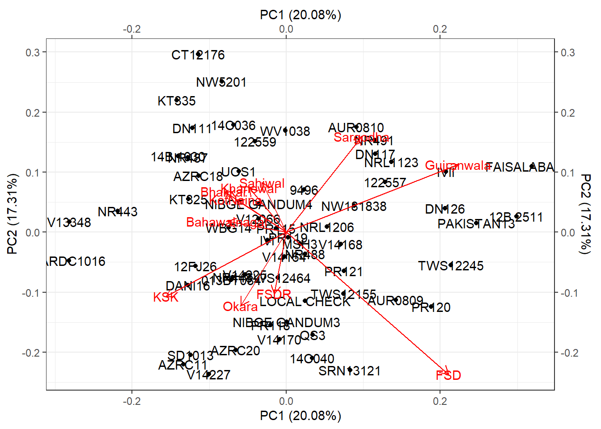
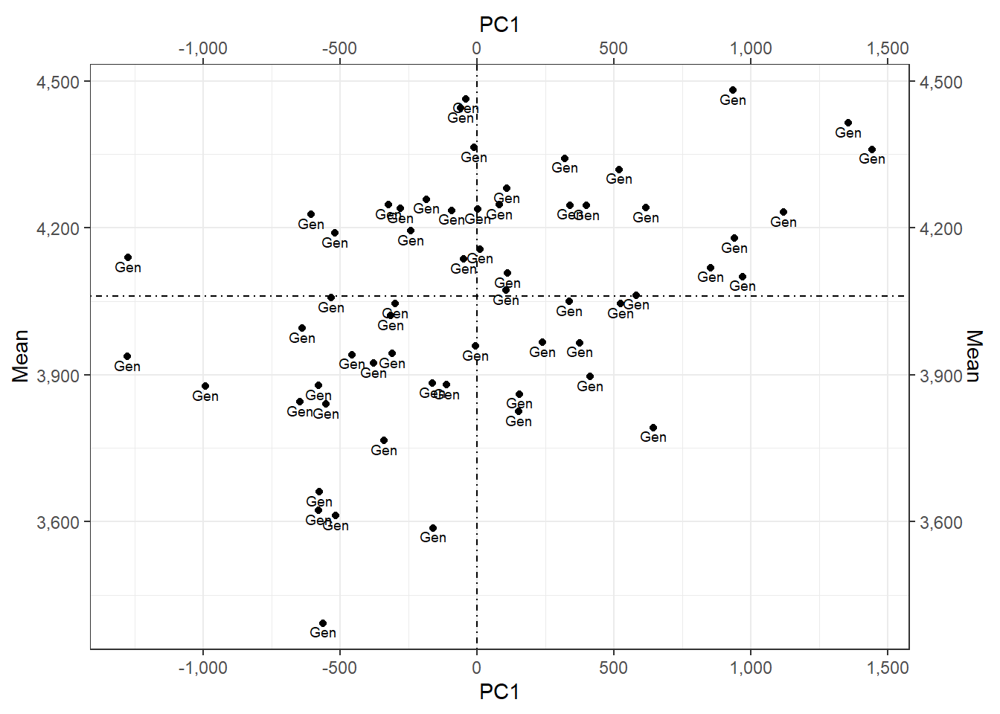
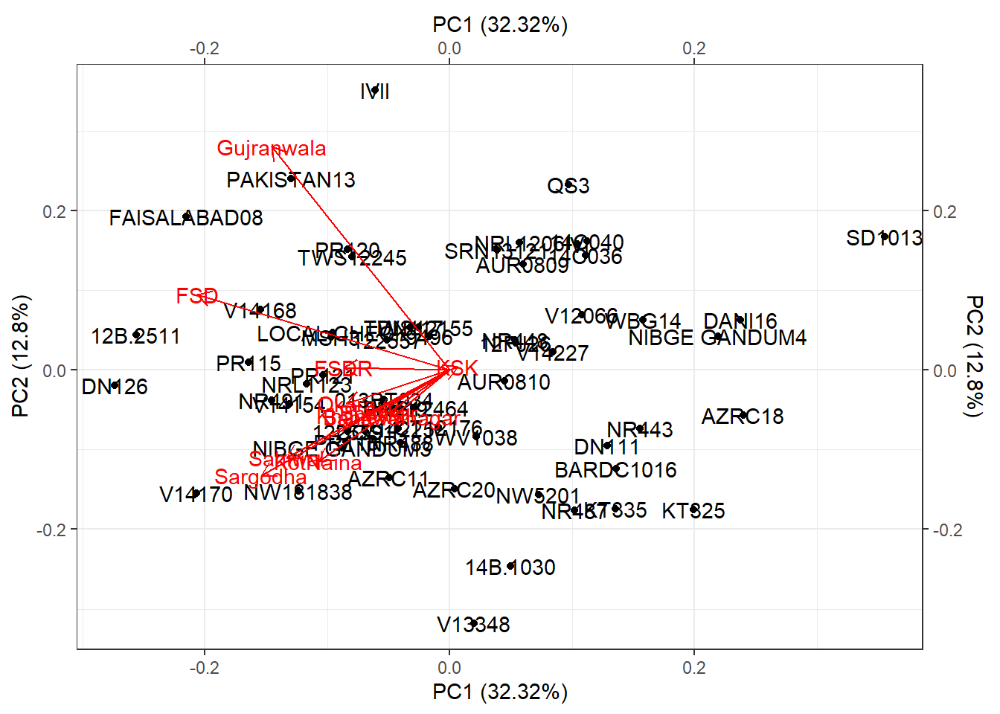

16 Stability Analysis
16.1 R package stability
R package stability16.2 Individual Analysis of Variance for each Location
$`Analysis of Variance for FSD`
Df Sum Sq Mean Sq F value Pr(>F)
Gen 59 45524231 771597 32.62 <0.0000000000000002 ***
Residuals 60 1419180 23653
---
Signif. codes: 0 '***' 0.001 '**' 0.01 '*' 0.05 '.' 0.1 ' ' 1
$`Analysis of Variance for FSDR`
Df Sum Sq Mean Sq F value Pr(>F)
Gen 59 14019781 237623 2.724 0.0000791 ***
Residuals 60 5234860 87248
---
Signif. codes: 0 '***' 0.001 '**' 0.01 '*' 0.05 '.' 0.1 ' ' 1
$`Analysis of Variance for Okara`
Df Sum Sq Mean Sq F value Pr(>F)
Gen 59 26802597 454281 3.538 0.00000122 ***
Residuals 60 7703642 128394
---
Signif. codes: 0 '***' 0.001 '**' 0.01 '*' 0.05 '.' 0.1 ' ' 1
$`Analysis of Variance for Sargodha`
Df Sum Sq Mean Sq F value Pr(>F)
Gen 59 38381469 650533 4.254 0.000000043 ***
Residuals 60 9175301 152922
---
Signif. codes: 0 '***' 0.001 '**' 0.01 '*' 0.05 '.' 0.1 ' ' 1
$`Analysis of Variance for Gujranwala`
Df Sum Sq Mean Sq F value Pr(>F)
Gen 59 41863914 709558 4.687 0.00000000655 ***
Residuals 60 9082956 151383
---
Signif. codes: 0 '***' 0.001 '**' 0.01 '*' 0.05 '.' 0.1 ' ' 1
$`Analysis of Variance for KotNaina`
Df Sum Sq Mean Sq F value Pr(>F)
Gen 59 26692263 452411 4.3 0.0000000351 ***
Residuals 60 6313095 105218
---
Signif. codes: 0 '***' 0.001 '**' 0.01 '*' 0.05 '.' 0.1 ' ' 1
$`Analysis of Variance for KSK`
Df Sum Sq Mean Sq F value Pr(>F)
Gen 59 17890629 303231 3.472 0.00000168 ***
Residuals 60 5239575 87326
---
Signif. codes: 0 '***' 0.001 '**' 0.01 '*' 0.05 '.' 0.1 ' ' 1
$`Analysis of Variance for Khanewal`
Df Sum Sq Mean Sq F value Pr(>F)
Gen 59 15125214 256360 2.451 0.000345 ***
Residuals 60 6274965 104583
---
Signif. codes: 0 '***' 0.001 '**' 0.01 '*' 0.05 '.' 0.1 ' ' 1
$`Analysis of Variance for Sahiwal`
Df Sum Sq Mean Sq F value Pr(>F)
Gen 59 26109918 442541 4.095 0.0000000882 ***
Residuals 60 6484679 108078
---
Signif. codes: 0 '***' 0.001 '**' 0.01 '*' 0.05 '.' 0.1 ' ' 1
$`Analysis of Variance for Bhakkar`
Df Sum Sq Mean Sq F value Pr(>F)
Gen 59 10870598 184247 1.862 0.00885 **
Residuals 60 5936717 98945
---
Signif. codes: 0 '***' 0.001 '**' 0.01 '*' 0.05 '.' 0.1 ' ' 1
$`Analysis of Variance for Bahawalnagar`
Df Sum Sq Mean Sq F value Pr(>F)
Gen 59 9718292 164717 1.716 0.0196 *
Residuals 60 5760765 96013
---
Signif. codes: 0 '***' 0.001 '**' 0.01 '*' 0.05 '.' 0.1 ' ' 1Yield.indiv_anova <-
indiv_anova(
.data = ge_data
, .y = Yield
, .rep = Rep
, .gen = Gen
, .env = Env
)
Yield.indiv_anova16.3 Combined Analysis of Variance
$anova
Analysis of Variance Table
Response: .data[[Y]]
Df Sum Sq Mean Sq F value Pr(>F)
Env 10 263940496 26394050 68.0551 0.00000001995 ***
Rep(Env) 11 4266167 387833
Gen 59 71662431 1214617 12.2482 < 0.00000000000000022 ***
Gen:Env 590 201336476 341248 3.4411 < 0.00000000000000022 ***
Residuals 649 64359568 99167
---
Signif. codes: 0 '***' 0.001 '**' 0.01 '*' 0.05 '.' 0.1 ' ' 1YieldANOVA <-
add_anova(
.data = ge_data
, .y = Yield
, .rep = Rep
, .gen = Gen
, .env = Env
)
YieldANOVA16.4 Additive Main Effects and Multiplicative Interaction (AMMI) Analysis
$anova
Analysis of Variance Table
Response: .data[[Y]]
Df Sum Sq Mean Sq F value Pr(>F)
Env 10 263940496 26394050 68.0551 0.00000001995 ***
Rep(Env) 11 4266167 387833
Gen 59 71662431 1214617 12.2482 < 0.00000000000000022 ***
Gen:Env 590 201336476 341248 3.4411 < 0.00000000000000022 ***
Residuals 649 64359568 99167
---
Signif. codes: 0 '***' 0.001 '**' 0.01 '*' 0.05 '.' 0.1 ' ' 1
$pc.anova
# A tibble: 11 × 9
PC SingVal Percent accumPerc Df SS Mean.Sq F.value Pr..F.
<chr> <dbl> <dbl> <dbl> <dbl> <dbl> <dbl> <dbl> <dbl>
1 PC1 4.50e+ 3 2.01e+ 1 20.1 68 4.04e+ 7 5.95e+ 5 6.00e+ 0 0
2 PC2 4.17e+ 3 1.73e+ 1 37.4 66 3.49e+ 7 5.28e+ 5 5.33e+ 0 0
3 PC3 4.05e+ 3 1.63e+ 1 53.7 64 3.27e+ 7 5.12e+ 5 5.16e+ 0 0
4 PC4 3.49e+ 3 1.21e+ 1 65.8 62 2.44e+ 7 3.93e+ 5 3.96e+ 0 0
5 PC5 3.38e+ 3 1.13e+ 1 77.1 60 2.29e+ 7 3.81e+ 5 3.84e+ 0 0
6 PC6 3.11e+ 3 9.63e+ 0 86.7 58 1.94e+ 7 3.34e+ 5 3.37e+ 0 4.02e-14
7 PC7 2.30e+ 3 5.25e+ 0 92.0 56 1.06e+ 7 1.89e+ 5 1.90e+ 0 1.45e- 4
8 PC8 2.03e+ 3 4.10e+ 0 96.1 54 8.25e+ 6 1.53e+ 5 1.54e+ 0 9.52e- 3
9 PC9 1.52e+ 3 2.30e+ 0 98.4 52 4.63e+ 6 8.91e+ 4 8.98e- 1 6.77e- 1
10 PC10 1.28e+ 3 1.63e+ 0 100 50 3.27e+ 6 6.55e+ 4 6.60e- 1 9.66e- 1
11 PC11 1.92e-11 3.64e-28 100 48 7.34e-22 1.53e-23 1.54e-28 1 e+ 0Yield.ammi <-
ammi(
.data = ge_data
, .y = Yield
, .rep = Rep
, .gen = Gen
, .env = Env
)
Yield.ammi16.5 Additive Main Effects and Multiplicative Interaction (AMMI) Biplot
$aami.biplot
$MeanPC1Plot
ammi_biplot(
.data = ge_data
, .y = Yield
, .rep = Rep
, .gen = Gen
, .env = Env
)16.6 Genotype plus Genotypes by Environment (GGE) Interaction Biplot Analysis
$gge.biplot
gge_biplot(
.data = ge_data
, .y = Yield
, .rep = Rep
, .gen = Gen
, .env = Env
)